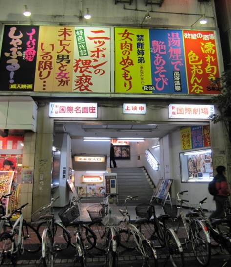
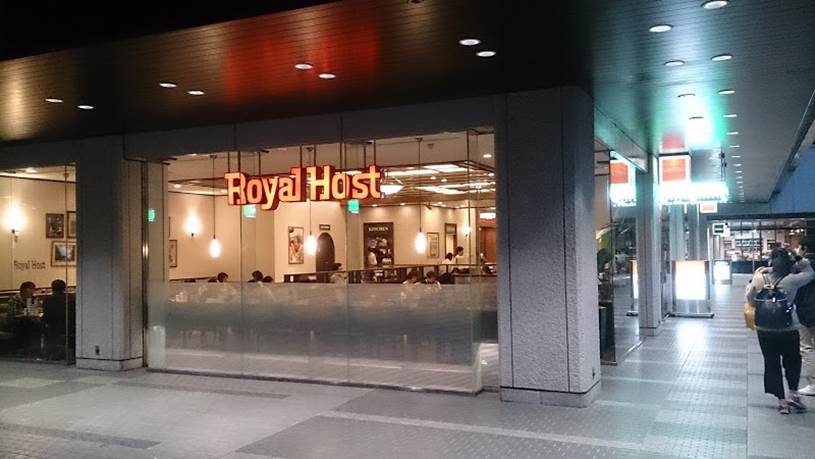

出典：
² 新宿国际名画座
新宿国際名画座，靠近新宿站东出口。票价稍高，在1800日元左右。举世闻名的播放“粉红电影”（指大量出现的裸体镜头的电影）的电影院。

Figure.1 国際名画座入口（还有让人无力吐槽的宣传板）
² Royal
Host Restaurant
由皇家控股（Royal Holdings）经营的全国性家庭餐厅。 总体价格略高于其他家庭餐厅。尽管新宿有很多家Royal
Host餐厅，但灰流和九月讨论粉红色电影的地方，应该是新宿i-Land
Tower 1F或新宿三井大厦
1F。

Figure 2. Royal Host Restaurant近景